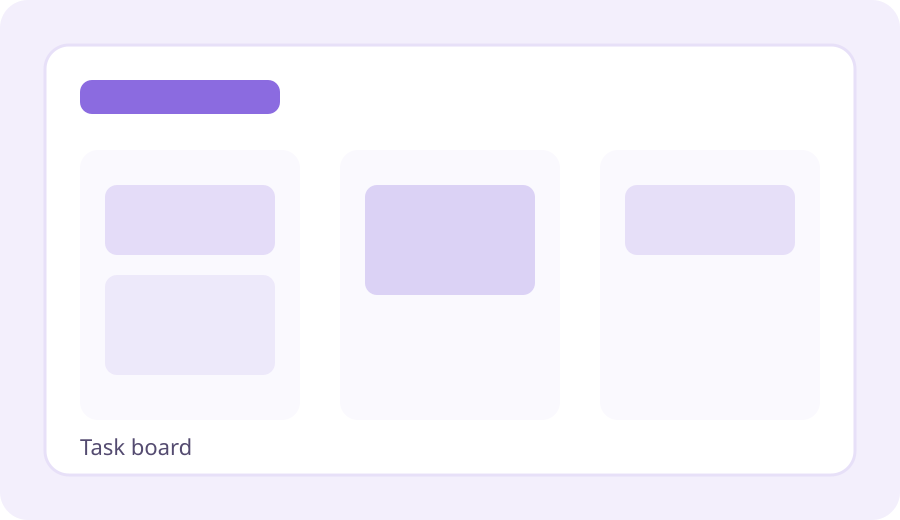

A calmer way to get things done
Make room for your best work.
Plan projects, track tasks, and build focus one session at a time.
Get started Log in
A view for every part of your day
How it works
01
Plan your project
02
Focus on one task
03
Celebrate progress
Features
Task board
Track work by status.
Projects
Group work into goals.
Calendar
See deadlines.
Timeline
Review schedules.
Pomodoro
Make room for focus.
Analytics
Review sample progress.